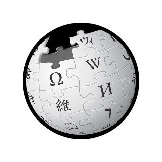
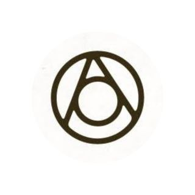
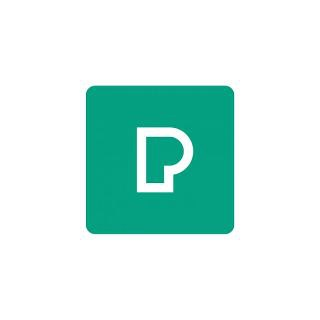

SiteScape: Your web companion for top-notch recommendations across the internet. Explore the best websites in every niche with us!
Want to know more about us navigate to About us
Welcome to the Primary Bookmarks section! Here, you'll find a carefully curated collection of essential websites and resources to help you streamline your online experience.
Whether you're a student looking for educational tools, a professional seeking productivity enhancers, or simply an internet enthusiast, our Primary Bookmarks are designed to be your go-to reference.
Explore a variety of categories, from news and information to entertainment and productivity apps, and easily access the websites you use most frequently with a single click.
The world's most popular search engine, a go-to for information, and web searches.
Access your email quickly and efficiently.
A platform for watching and sharing videos on various topics.
A valuable resource for information on a wide range of topics.
Essential for developers, it's a platform for version control and collaboration on software projects.
Discover even more with our Secondary Bookmarks section!
While our Primary Bookmarks serve as your daily essentials, the Secondary Bookmarks are here to expand your horizons. This section is all about exploration and experimentation.
Here, you'll find a diverse range of websites and resources that may not be part of your daily routine but can add value to your online journey.
Dive into categories like hobbies, niche interests, and fun diversions.
The Secondary Bookmarks are the place to discover new and exciting online destinations, so don't hesitate to explore and enrich your online experience
Explore thought-provoking talks on a wide range of subjects.
A community for DIY enthusiasts, offering step-by-step guides on various projects.

Create custom ambient sounds to improve focus or relaxation.
Discover unique and offbeat travel destinations and interesting places.
A source for high-quality, free stock photos and videos for your creative projects
Thank you for being a part of the SiteScape community. Your feedback helps us improve and provide you with the best possible bookmarking experience.